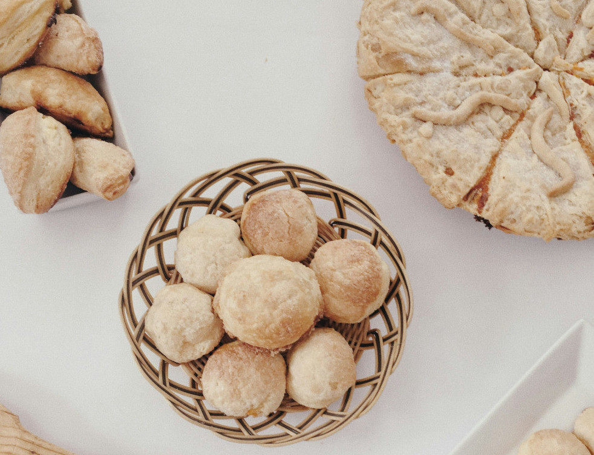

Receitas simples,porém saborosas para vôce cozinhar na sua casa
História da Receita

.O pão de queijo é um dos quitutes mais amados do Brasil,
com origem no estado de Minas Gerais. Sua história remonta ao período colonial,
quando as fazendas de Minas Gerais produziam uma grande quantidade de queijo devido à atividade leiteira da região.
Para aproveitar o excesso de queijo e tornar a alimentação mais sustentável, surgiu a ideia de fazer um pão com esse ingrediente,
que se tornou uma iguaria tradicional e querida em todo o país.